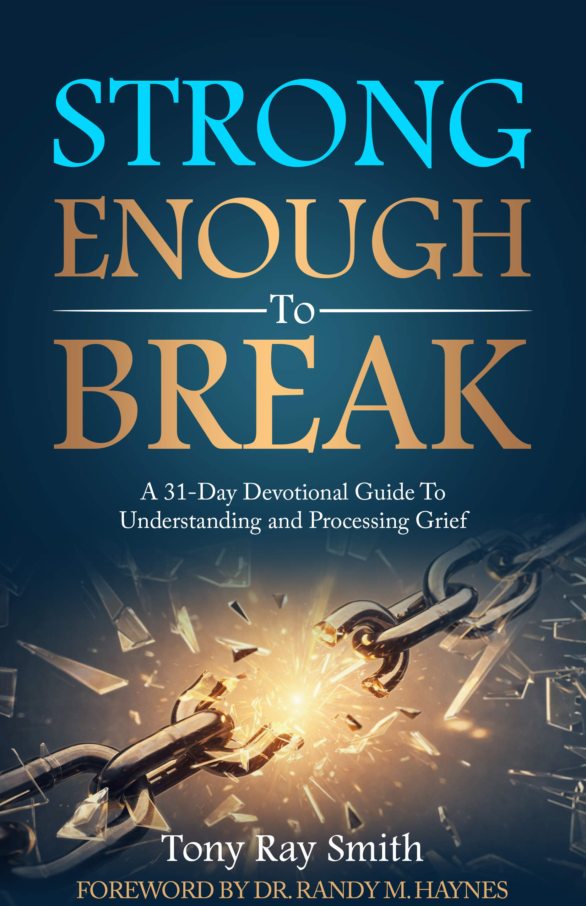

By Tony Ray Smith
Get Strong Enough to Break Now
It changes how you think, how you feel, how you pray, and how you move through ordinary days. You may look strong on the outside while feeling overwhelmed inside. You may be carrying losses you never fully processed. You may be tired of pretending you’re okay.
Strong Enough to Break is a 31-day devotional designed to help you slow down, face your grief honestly, and begin healing with practical guidance rooted in faith, compassion, and real-life experience.
This is not about “getting over” grief. It’s about learning how to move through it — one day at a time.
What would happen if you gave yourself permission to feel, reflect, and heal — just a little each day? What if breaking was not failure, but the beginning of restoration?

Start your 31-day journey toward understanding your grief and moving forward with clarity and hope.